CS184/284A Spring 2025 Homework 1 Write-Up
Names: Keagan Chern, Ice Unjitwattana
Link to webpage: https://cal-cs184-student.github.io/hw-webpages-supa-webpage/hw1/index.html
Link to GitHub repository:https://github.com/orgs/cal-cs184-student/teams/supanika

Overview
In homework 1, we walked through the rasterization pipeline. Starting with basic geometric triangle, we were able to rasterize a triangle to pixels on a screen. We used different techniques such as supersampling to help with jaggies and aliasing. We then moved on to texture mapping, where we used pixel sampling to map textures to triangles. We also implemented level sampling to help with aliasing in textures.Task 1: Drawing Single-Color Triangles
Walk through how you rasterize triangles in your own words.Ans
- Compute bounding box by finding the minimum and maximum x, y coordinates from the given points of a triangle.
- Loop through all points in bounding box
- Use the line check to see if each point is inside or outside the line.
- If the point is inside every line OR outside every line OR on the line, fill the pixel with color
Explain how your algorithm is no worse than one that checks each sample within the bounding box of the triangle. The bounding box of the triangle is defined as the smallest rectangle that can be drawn whilst ensuring that the entire triangle is within it.
Ans
Our algorithm computes the bounding box first and exclusively iterates through points that are in that box.
Show a png screenshot of basic/test4.svg with the default viewing parameters and with the pixel inspector centered on an interesting part of the scene.
Ans

Task 2: Antialiasing by Supersampling
Walk through your supersampling algorithm and data structures. Why is supersampling useful? What modifications did you make to the rasterization pipeline in the process? Explain how you used supersampling to antialias your triangles.Ans
The main modifications were in the `rasterize_triangle` and `resolve_to_framebuffer` sections of the pipeline. In rasterize_triangle, we increased the sampling frequency by sqrt(sampling rate) times and stored it in our larger resized buffer (this required modifications to the fill_buffer function to account for subpixel samples as well as updating some parameters to the buffer setup and resize functions). When resolving frame buffers, we now account for multiple samples per pixel by adding it all up and dividing them by the number of samples to get the pixel average.
Supersampling is a useful technique for antialiasing. It does so by pretending to have a high resolution screen buffer, and downsampling to match the actual resolution of the screen buffer that we have. This, in effect, creates a low-pass filter which prevents aliasing.
Show png screenshots of basic/test4.svg with the default viewing parameters and sample rates 1, 4, and 16 to compare them side-by-side. Position the pixel inspector over an area that showcases the effect dramatically; for example, a very skinny triangle corner. Explain why these results are observed.
Ans
|
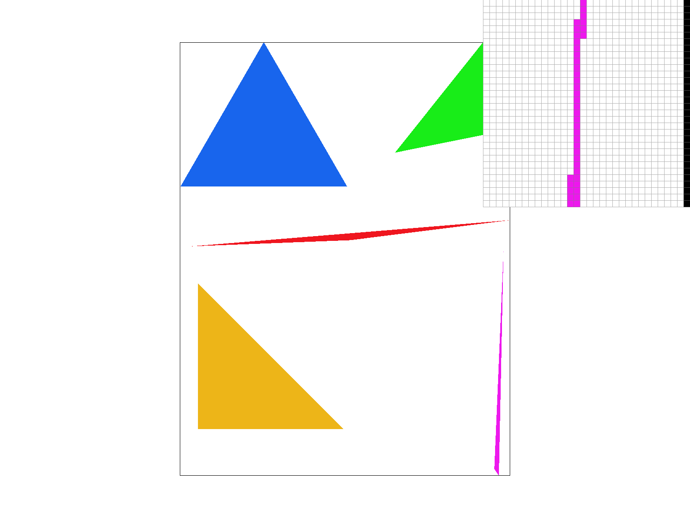
|
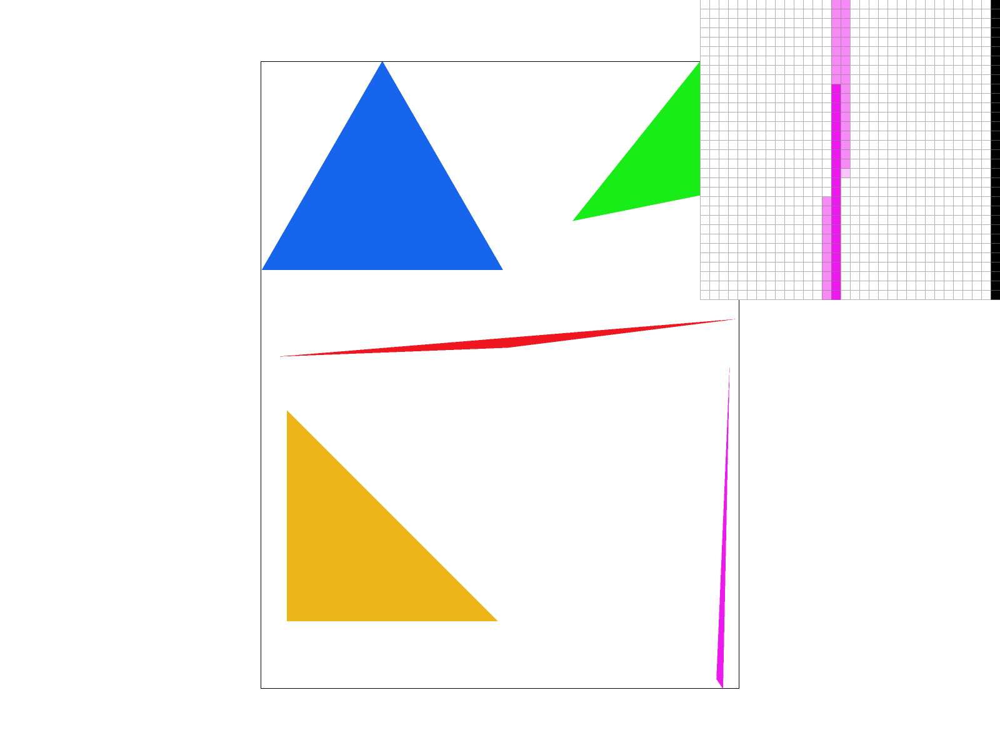
|
|
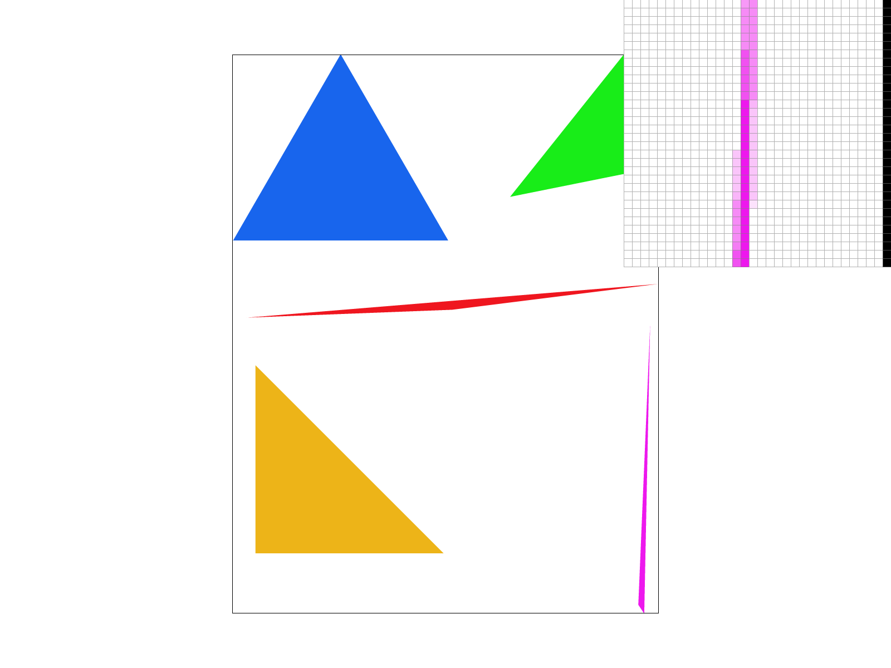
|
As the sample rate increases, we noticed that each increase in sample rate causes a decrease in high frequency changes. Sample rate 1 has more obvious jaggies, while reaching sample rate of 16 creates blurring around the edges leading to smoother edges. This is because we are taking more samples per pixel, which allows us to better approximate the true color of the pixel. This is especially noticeable in areas where the triangle is very thin, such as the edge shown in the images above.
Task 3: Transforms
Create an updated version of svg/transforms/robot.svg with cubeman doing something more interesting, like waving or running. Feel free to change his colors or proportions to suit your creativity. Save your svg file as my_robot.svg in your docs/ directory and show a png screenshot of your rendered drawing in your write-up. Explain what you were trying to do with cubeman in words.Ans

Cube man is doing a very dramatic wave! He is leaning on the right leg putting all his energy into shaking his hand in the left hand. Also we rotated and shifted the right arm down to make it look more natural.
Task 4: Barycentric coordinates
Explain barycentric coordinates in your own words and use an image to aid you in your explanation. One idea is to use a svg file that plots a single triangle with one red, one green, and one blue vertex, which should produce a smoothly blended color triangle.Ans
Barycentric coordinates help determine the relative positions of pixels to the object itself. In this project, this is helpful because it lets us interpolate colors of the entire triangle based on the three vertices. As you can see in the image, we only need to specify the colors on the 3 vertex of the triangle. By converting the coordinates to barycentric, we can perform linear interpolation to figure out how to smoothly color the rest of pixels.

Show a png screenshot of svg/basic/test7.svg with default viewing parameters and sample rate 1. If you make any additional images with color gradients, include them.
Ans
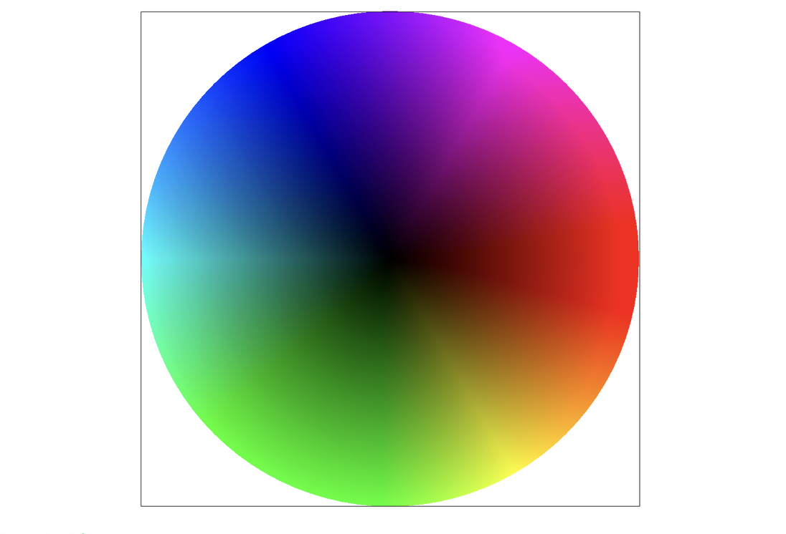
svg/basic/test7.svg
Task 5: "Pixel sampling" for texture mapping
Explain pixel sampling in your own words and describe how you implemented it to perform texture mapping. Briefly discuss the two different pixel sampling methods, nearest and bilinear.Ans
Pixel sampling maps continuous texture coordinates to discrete texel samples. We converted the coordinates of each pixel in the triangle into barycentric coordinates and used that to map each pixel to a color based on sampling method. In “nearest”, we simply chose the discrete texel that was closest to the coordinate. In “bilinear”, we selected the 4 closest texels and performed bilinear interpolation between them to come up with “the average” color.
Check out the svg files in the svg/texmap/ directory. Use the pixel inspector to find a good example of where bilinear sampling clearly defeats nearest sampling. Show and compare four png screenshots using nearest sampling at 1 sample per pixel, nearest sampling at 16 samples per pixel, bilinear sampling at 1 sample per pixel, and bilinear sampling at 16 samples per pixel.
Ans
|
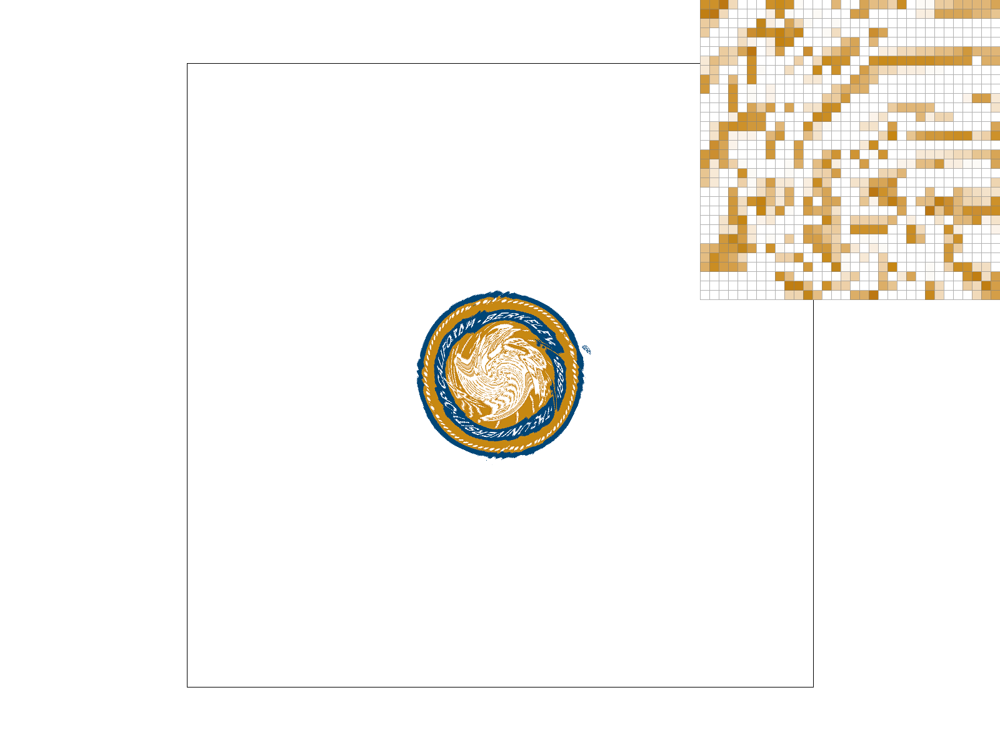
|
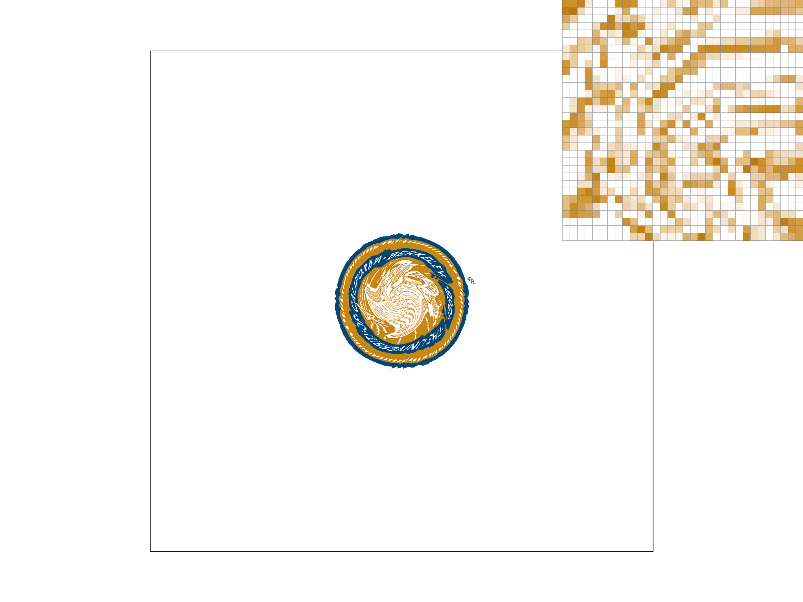
|
|
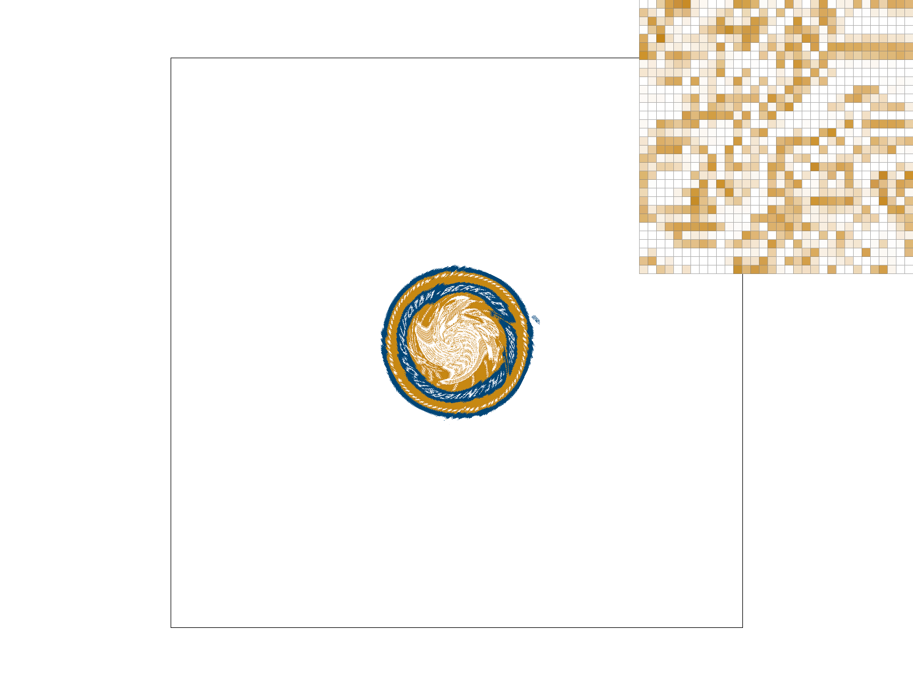
|
|
Task 6: "Level Sampling" with mipmaps for texture mapping
Explain level sampling in your own words and describe how you implemented it for texture mapping.Ans
Level sampling is the method of choosing which texture level to use to prevent aliasing in (usually) 3d scenes where some of the texture might cover more pixels and some of the texture might cover less due to perspective.
We implemented this by calculating the rate of change of the texture coordinates for each pixel across the screen (using the formula provided in lecture). We then chose the higher rate of change between the x and y axis and computed the mip level (also using the formula from lecture). Finally, depending which mode we were in, we would use that floating point result to select a discrete level to sample from for that pixel.
You can now adjust your sampling technique by selecting pixel sampling, level sampling, or the number of samples per pixel. Describe the tradeoffs between speed, memory usage, and antialiasing power between the three various techniques.
Ans
Each sampling techniques are like knobs which independently affect speed, memory usage, and antialiasing of the image, so we will analyze them in separate dimensions as such:
- Increasing the number of samples per pixel, directly improves image quality and reduces aliases. However, it also quadratically increases memory usage and decreases speed. To take twice the samples linearly, we need to sample 4x data points.
- Bilinear sampling is slightly slower than nearest neighbor sampling and may use more memory (though we feel this is asymptotically negligible). However, bilinear sampling smoother (blurrier), less pixelated image which significantly reduces aliasing in high-detail images
- Level Zero sampling saves the most memory since we'd only have to store 1 level of texture map, though it causes noticable aliasing for objects in the distance. Nearest level selection is faster than linear level selection and produces a better result than level zero selection. However, linear selection results in the smoothest image quality with the least amount of aliasing since it's much harder to tell when the texture switches from one level to another.
Using a png file you find yourself, show us four versions of the image, using the combinations of L_ZERO and P_NEAREST, L_ZERO and P_LINEAR, L_NEAREST and P_NEAREST, as well as L_NEAREST and P_LINEAR.
To use your own png, make a copy of one of the existing svg files in svg/texmap/ (or create your own modelled after one of the provided svg files). Then, near the top of the file, change the texture filename to point to your own png. From there, you can run ./draw and pass in that svg file to render it and then save a screenshot of your results.
Note: Choose a png that showcases the different sampling effects well. You may also want to zoom in/out, use the pixel inspector, etc. to demonstrate the differences.
Ans
|
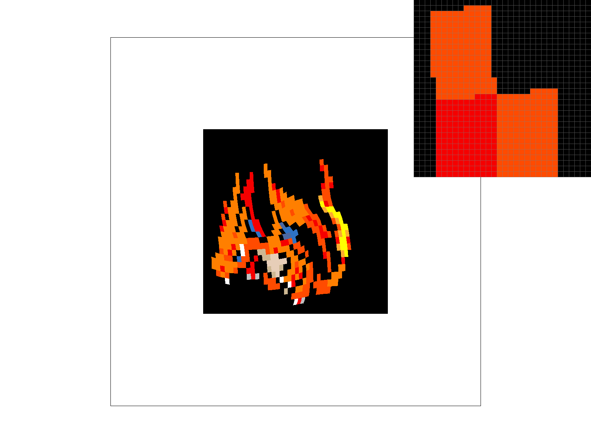
|
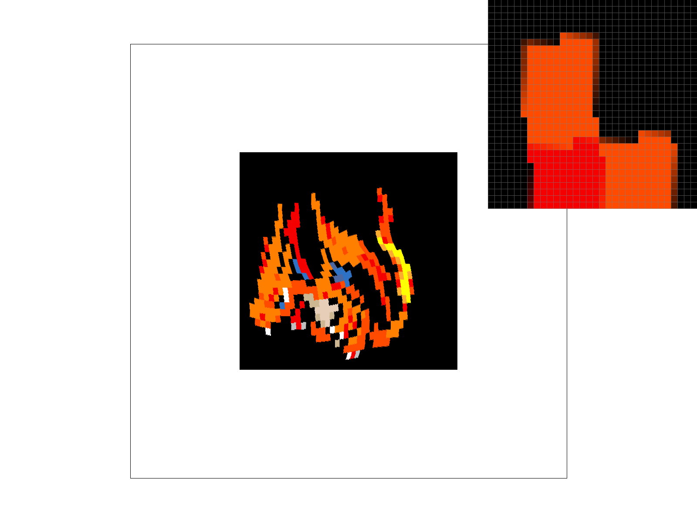
|
|
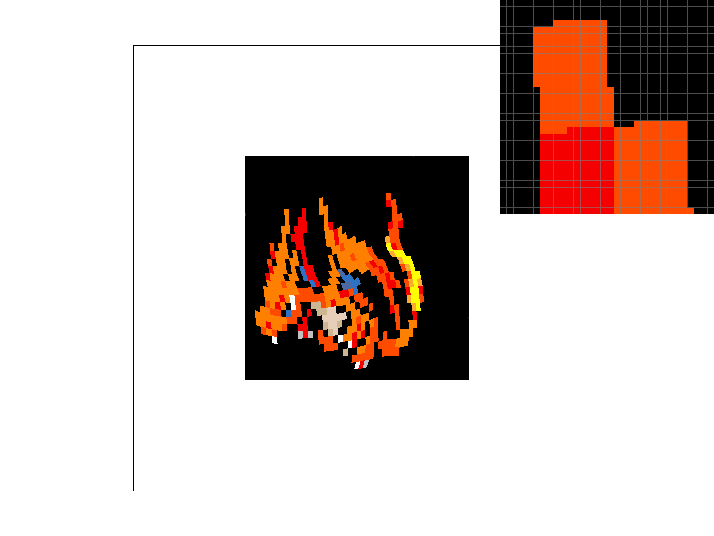
|
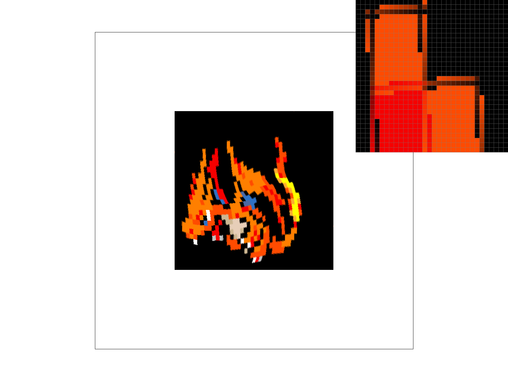
|
|
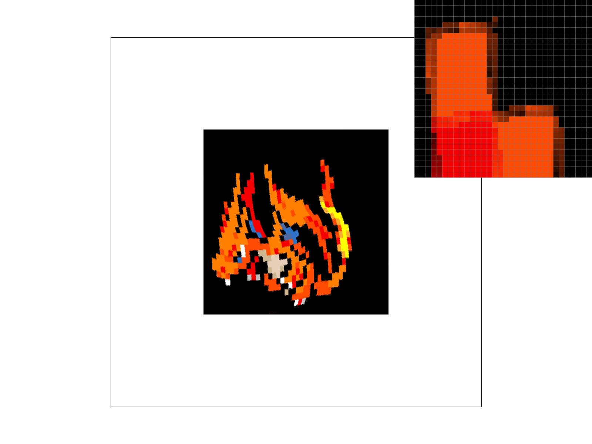
|